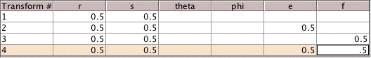
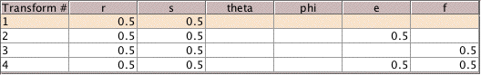

| Using the transformations introduced in the Background, |
| T3(x, y) = (x/2, y/2) + (0, 1/2) |
T4(x, y) = (x/2, y/2) + (1/2, 1/2) |
| T1(x, y) = (x/2, y/2) |
T2(x, y) = (x/2, y/2) + (1/2, 0) |
|
| shade the regions with address 11, 12, and 21. |
|
 |
|
|
|
| 11 | |
12 | |
21 | |
| Test your answers with the software. To
do this, |
| first go to the Scenarios menu in the program and select Blank. |
| Then go to the Edit menu and select Affine Transformations. Enter the parameters for the rules shown above. |
| To change a cell entry, double click on the entry and type the change. |
A black outline surrounds a cell that is accepting changes. To be sure the change has been processed,
click outside the cell, or press Return. For example, the bottom right .5 has not been accepted by the program from this table,
|  |
|
| but in this table the bottom right 0.5 has been accepted by the program. Running the program
without this step will treat the f value of T4 as 0, making T4 = T2 and the
picture will be a Gasket. |
|  |
|
| Under the edit menu select Highlight Address and enter the desired address. |
| Finally, under the edit menu select Point Size and change the value to 2. The highlighted address will show up more clearly
with larger points. |
|
| Here are the results from the software. |
| Note the regions with addresss 12 and 21 are not identical. This illustrates that the functions T1 and T2 do not commute. Of course,
direct calculation reveals the
same point, but the visual approach may be more striking. |
| Shade the square with address 123. |
 |
| Here is the result from the software. |